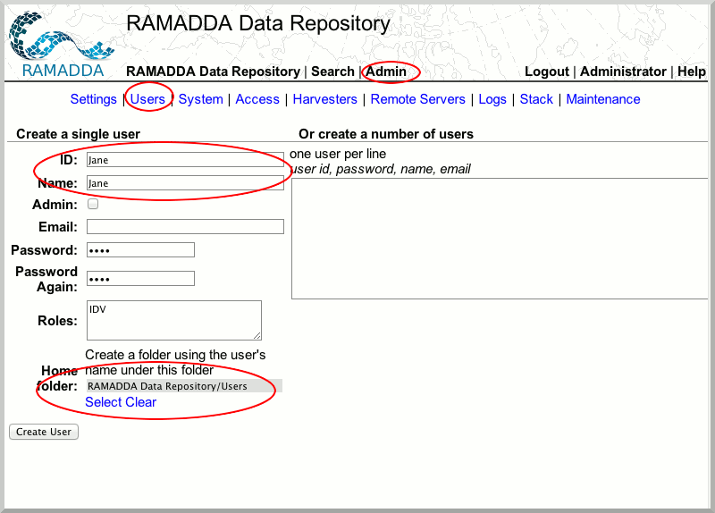
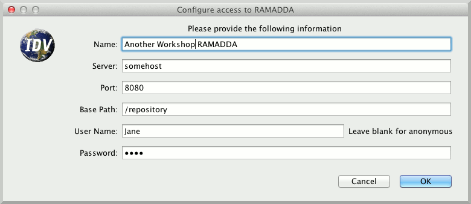
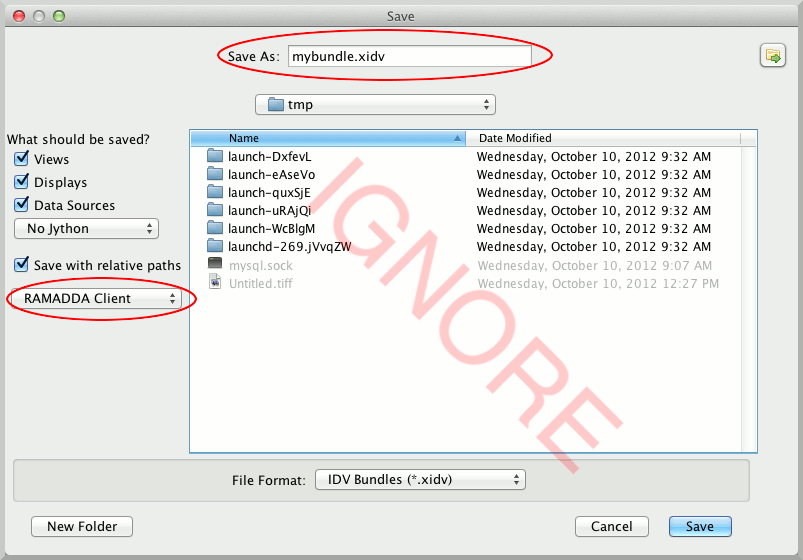
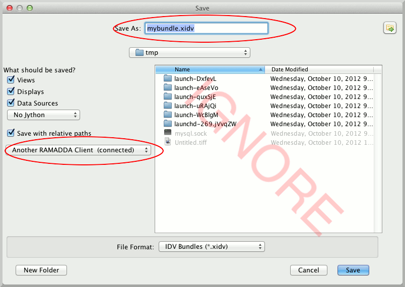
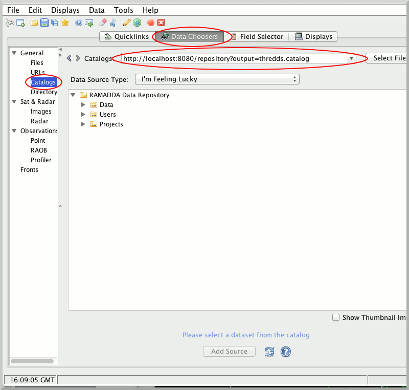

Building Collaborative Networks with the IDV and RAMADDA
The IDV coupled with RAMADDA creates a powerful combination for collaborating on IDV projects with your colleagues. In this exercise, we will build an IDV/RAMADDA collaborative network.
- Login to your local RAMADDA with the admin account you created earlier, and create a second user named "Jane" with the same password. Be sure to select a Home Folder, as you did last time. This will be the login for other workshop participants to login to your instance of RAMADDA.

- Please logout of your admin account.
- In the IDV, as we did in the previous exercise connect to another workshop participant's instance of RAMADDA with the Jane login. Your instructor will provide you with the host information.

- Load some data (for example, a sample bundle [ht::menu Displays {Favorite Bundle} Sample {Grid Displays}]) and save this bundle to your folder RAMADDA as we did in the previous exercise.

- Now save this bundle to your neighbors RAMADDA instance

- In the IDV Dashboard, select the "Data Choosers" tab, "Catalogs". In the "Catalogs" text area, enter the URL of the THREDDS catalog:
http://localhost:8080/repository?output=thredds.catalog.

- In the same "Catalogs" text area, enter the URL of another workshop participant. Your instructor will provide you with that URL.
- Browse and load each others bundles.
You have now built an IDV collaborative network, using RAMADDA. You can publish your work to your peers, as well as browse your colleague's IDV content.